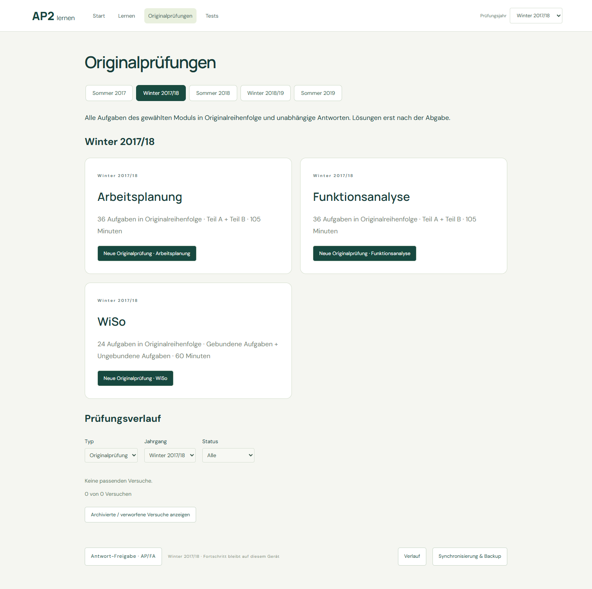
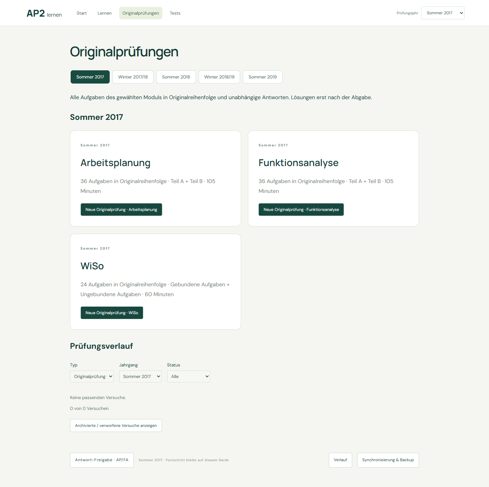
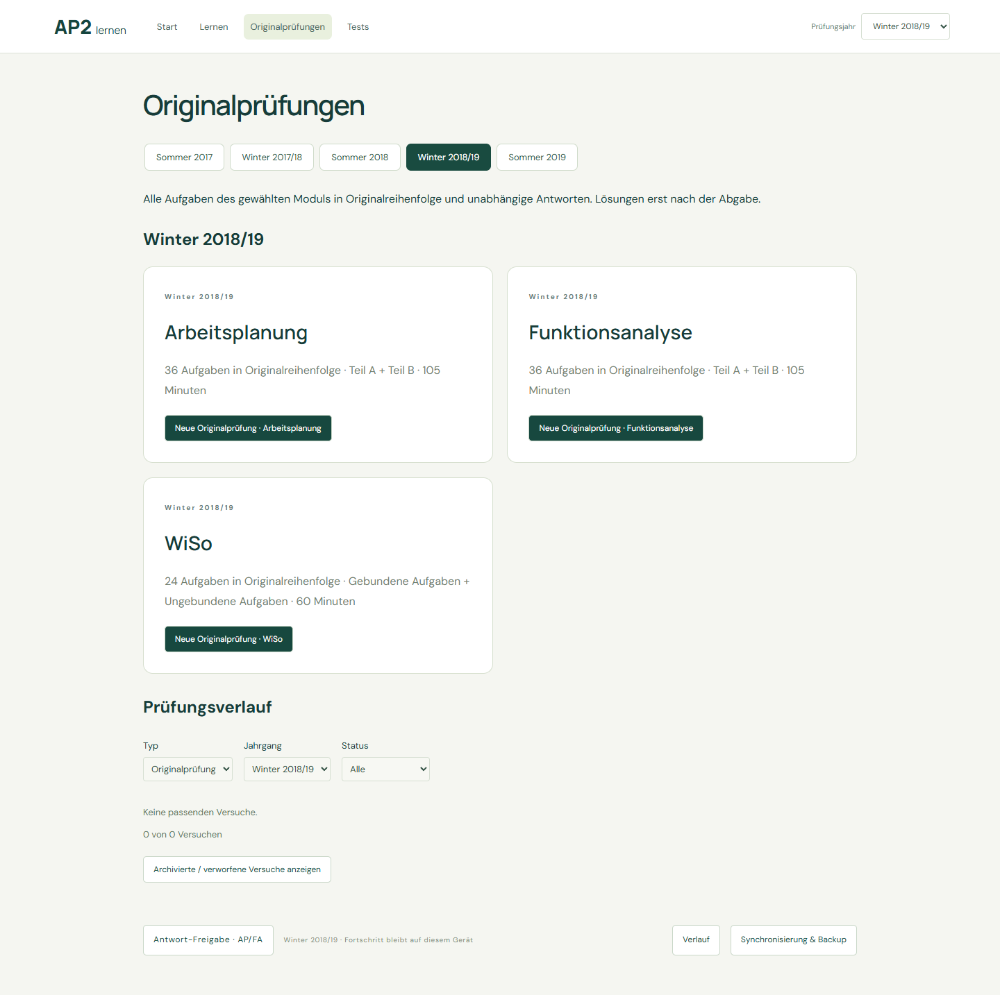
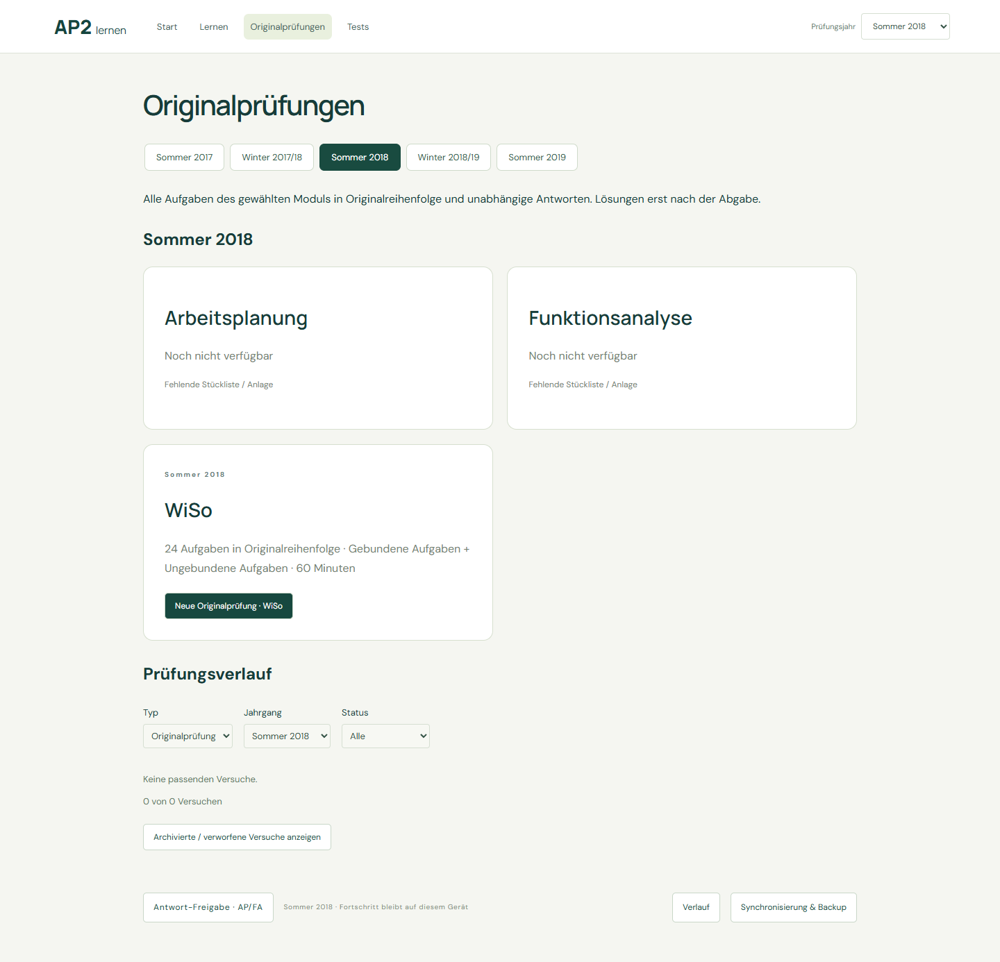
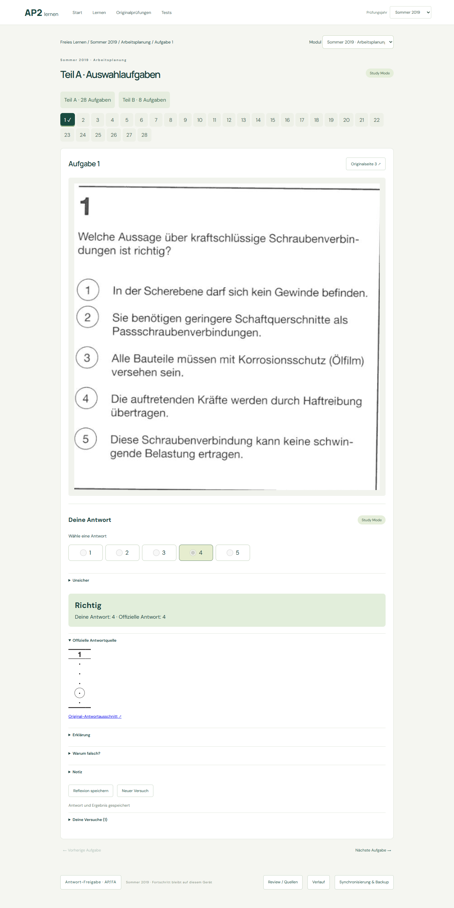
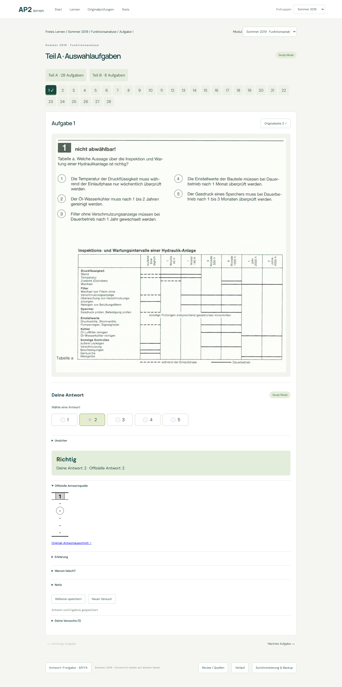
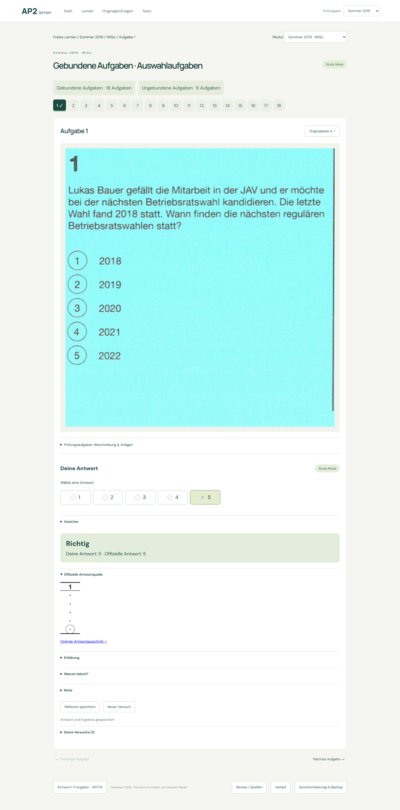

Arbeitsplanung → Funktionsanalyse → WiSo · gleiche Reihenfolge in allen Jahrgängen und Lernansichten. Sommer 2018 AP/FA bleiben gesperrt: Fehlende Stückliste / Anlage.
| Sommer 2019 | Aufgaben | MC | U | Review |
|---|---|---|---|---|
| Arbeitsplanung · alle Bilder | 36 | 28/28 | 8/8 | 0 |
| Funktionsanalyse · alle Bilder | 36 | 28/28 | 8/8 | 0 |
| WiSo · alle Bilder | 24 | 18/18 | 6/6 | 0 |
Die Galerien zeigen jede Aufgabe, alle physischen Seiten mit Regionszuordnung, Antwortkreis-Overlay und die geprüften offiziellen U-Lösungen.
Profil wiederverwendet: portrait-explicit-regions + official-ring-grid. 89 neue Seiten einmalig gecacht, 0 alte PDF-Neuscans. 24 bisherige Quellen unverändert. Persönliche Daten nicht angefasst.
FA enthält doppelt gescannte U2–U5-Seiten; diese erhalten keine neuen Aufgaben-IDs. WiSo U2/U3 haben ausdrücklich zugeordnete Fortsetzungen. U5 bleibt in der originalen seitlichen Ausrichtung.
Abdeckung · Bestandsschutz · Resume / kein PDF-Neuscan · Navigation · Lernen / Tests
Nach Sommer 2019 gestoppt: Nutzerabnahme ausstehend, keine späteren Archive geöffnet.
Sommer 2019 · Funktionsanalyse






